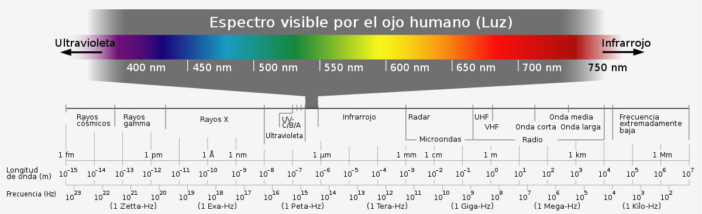
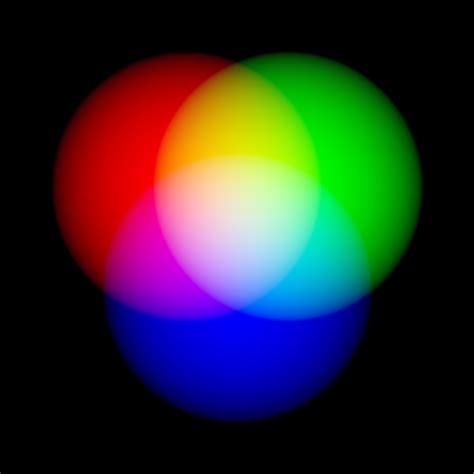
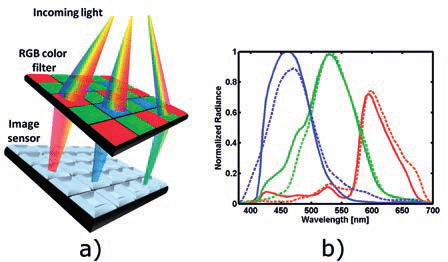
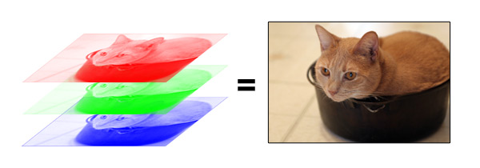

Ondas electromagnéticas visibles

La luz visible, al igual que el sonido, es un rango de radiación electromagnética que puede ser percibida por el ojo humano.
Antes de comentar cómo es transformada en información digital, es importante conocer los colores primarios de la luz.
En la escuela, nos enseñaron que los colores primarios son el azul, el amarillo y el rojo, con esos tres colores podíamos combinar nuestras témperas para obtener casi toda la paleta de colores (sumando el blanco y el negro). Con la luz ocurre algo similar, sólo que los colores primarios son el Rojo, el Verde y el Azul (RGB por su sigla en inglés -red, green, blue-).

Al igual que el sonido, la transformación de luz en información cuantitativa, se realiza a partir de diferentes dispositivos técnicos. Los sensores digitales de imagen capturan la luz a partir de filtros RGB.

En la viñeta a vemos cómo la luz visible pasa por la cuadrícula del filtro RGB, que la separa en tres señales diferentes, que luego son captadas por el sensor y traducidas a valores numéricos de longitudes de onda y radiaciones (viñeta b).
Algunos dispositivos permiten guardar la información digital de las capas RGB por separado, lo que da mayor control para su manipulación posterior, pero también aumenta el tamaño del archivo. Por lo general, las cámaras de uso extendido, filtran las tres capas y luego las vuelven a juntar, formando la imagen digital.
